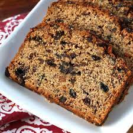

Bara Brith Recipe

Description
Traditional Welsh tea bread, made with dried fruit soaked in tea.
This is not the traditional recipe for bara brith, meaning speckled bread as the original
recipe was based on a yeasted bread. However this version which is widely served, makes a beautifully
moist cake as the dried fruit are soaked overnight in tea.
It's best stored for a couple of days before eating, allowing the flavours to develop.
Ingredients
- 400g Dried Mixed Fruit
- 300ml Hot Tea
- 100g Soft Dark Brown Sugar
- 1 tsp Mixed Spice
- 250g Self-raising Flour
- 1 Free-range Egg (beaten)
Steps
- In a large bowl, place your dried mixed fruit, hot tea and sugar. Once the tea cools,
cover and leave the fruit to soak up the tea and sugar over night.
- The next day, pre-heat your oven to 180°c (160°c for fan assisted
ovens or Gas Mark 4). Line a 2lb loaf tin with grease proof paper and set aside.
- Sift the flour and mixed spice into the bowl of soaked mixed fruit.
Add the [beaten] egg and mix everything together until well combined.
- Pour the mixture into your lined loaf tin, spreading to the corners. Bake in your pre-heated oven
for about 1 hour, until dry on top and a skewer inserted comes out clean.
- On a floured surface, pat the dough into a disk and gently roll out until
it's about 1/4 to 1/3 of an
inch thick. You can divide the dough in half and keep half of it in the
fridge until you're ready for it if your rolling surface
and frying pan/griddle are on the smaller side.
- Once cool, remove from the tin but keep the greaseproof paper lining on.
Bara Brith is best enjoyed after a couple of days kept in an air tight container,
sliced with a spread of butter/margarine.